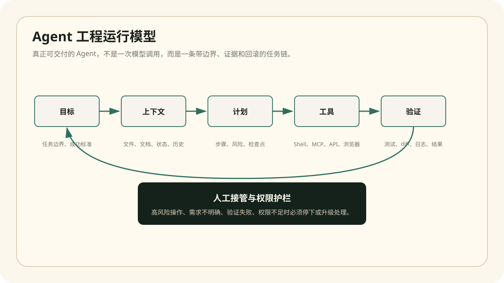
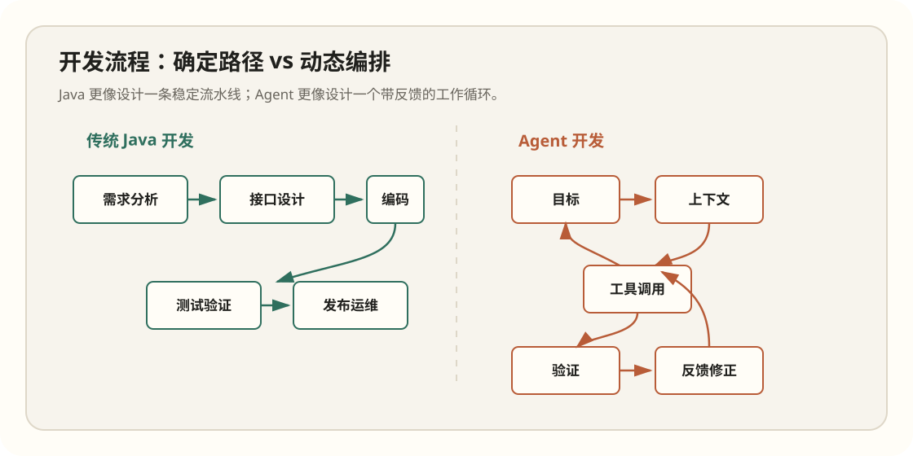
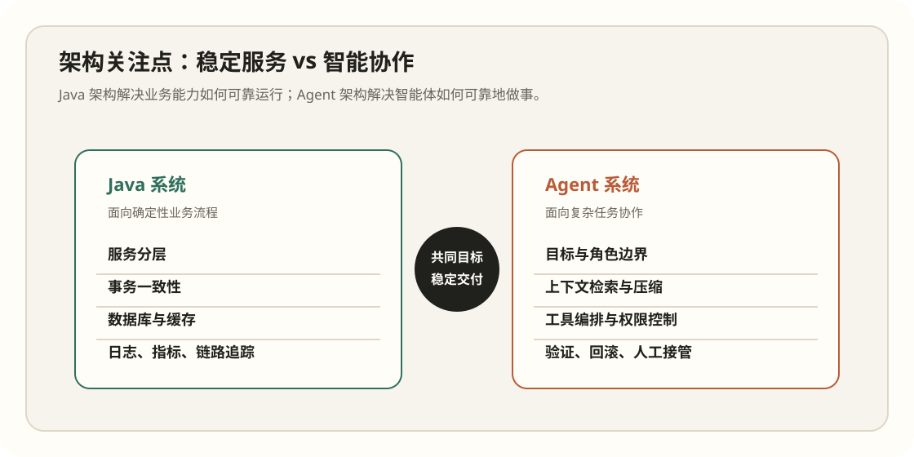
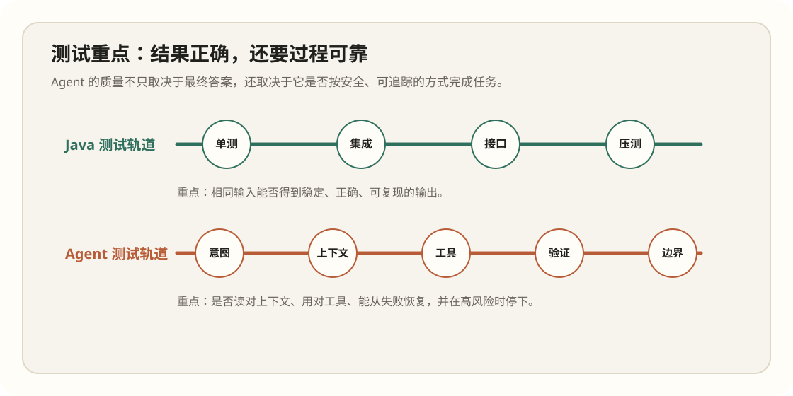

2026.04.12 · Agent Engineering
Agent 开发和传统 Java 开发有什么不同
如果说传统 Java 开发是在构建一台稳定运行的业务机器，那么 Agent 开发是在设计一个会读上下文、会使用工具、会自我修正，也可能误判的工程协作者。真正的差别不在 Prompt 写得漂不漂亮，而在你是否能把“一个资深开发者怎么工作”拆成可执行、可验证、可接管的流程。

一、Java 开发解决确定性，Agent 开发管理不确定性
Java 后端系统的理想状态是稳定、可预测、可复现。接口入参明确，数据库事务明确，异常分支明确，测试用例可以把关键路径固定下来。工程师关心的是：这个服务能不能在大量请求下稳定地完成业务规则。
Agent 系统的输入往往是自然语言目标、半结构化上下文和动态工具环境。它不是只执行一条固定代码路径，而是需要判断下一步该读文件、查文档、调用 API、运行测试，还是停下来问人。因此 Agent 工程的重点不是消灭不确定性，而是把不确定性关进可控边界里。
这件事在真实项目里非常明显。写 Java 接口时，我可以把需求压成“新增一个 POST /orders/{id}/cancel 接口，状态为 PAID 时禁止取消，状态为 CREATED 时回滚库存”。但让 Agent 修一个线上问题时，需求通常长这样：“这个接口今天突然 500，帮我看下”。这里没有明确入参，没有明确改哪个文件，也没有明确验收路径。Agent 必须先建立问题空间，再决定行动顺序。
| 维度 | 传统 Java 开发 | Agent 开发 |
|---|---|---|
| 核心对象 | 类、接口、服务、数据库表、消息队列 | 目标、上下文、工具、权限、任务轨迹 |
| 主要风险 | 逻辑错误、事务不一致、性能瓶颈、并发问题 | 幻觉、越权、上下文误读、错误工具调用、不可复现 |
| 测试重点 | 输入输出是否正确，链路是否稳定 | 结果是否正确，过程是否遵守边界，失败是否可恢复 |
| 上线标准 | 功能通过测试，性能和可观测性达标 | 任务成功率、轨迹质量、权限护栏、人工接管机制达标 |
二、需求表达从“接口契约”变成“工作协议”
在 Java 项目里，一个需求通常会落到 API、实体模型、数据库字段、流程状态和异常处理。需求越明确，代码越好写；契约越稳定，协作成本越低。
Agent 开发里的需求还要转化成一套工作协议：任务目标是什么，必须读取哪些上下文，允许使用哪些工具，什么操作需要确认，失败后怎么回滚，什么时候必须停止。一个好的 Agent 指令，不是“帮我完成任务”，而是“用什么方式完成任务，并证明你完成得可信”。
一个可执行的 Agent 工作协议应该长这样
这不是给模型看的漂亮话，而是把团队里的工程纪律写成运行规则。越具体，越能减少“看起来很努力但其实在乱试”的情况。
task:
goal: 修复 failing test，并说明根因
allowed_tools:
- read_file
- search_code
- apply_patch
- run_tests
required_steps:
- 先读取失败输出，记录具体断言或异常栈
- 检索被测接口、调用链和最近修改点
- 修改前读取目标文件当前内容
- 单次改动只解决一个根因
- 修改后运行能覆盖该问题的最小测试集
stop_rules:
- 涉及删除数据、覆盖配置、发布部署时必须停下确认
- 连续两次测试失败后必须重新定位，不允许盲改关键判断：Java 代码最怕隐式规则散落在各处；Agent 最怕隐式意图藏在人的脑子里。前者需要接口和测试，后者需要上下文、约束和验收标准。
三、工具调用让 Agent 更强，也让风险放大
Agent 一旦可以调用 shell、浏览器、数据库、MCP 服务或代码编辑器，它就不再只是“聊天模型”。它具备了改变外部世界的能力。能力越强，权限设计越重要。
传统 Java 服务的权限通常由系统边界控制，例如接口鉴权、数据库账号、服务间 token。Agent 的权限还要考虑“什么时候允许调用工具”“工具调用前是否需要读上下文”“调用结果是否必须验证”。这更像是给一个初级工程师制定工作守则，而不是单纯开放一个 API。

真实场景：让 Agent 修复一个接口测试失败
传统 Java 工程师会先看失败用例、查日志、定位 controller/service/repository 的责任边界，再修改代码并跑回归测试。Agent 也应该遵守同样路径：先读取失败输出，再检索相关代码，确认接口契约和数据准备，然后提出最小修改。区别在于，Agent 需要被明确禁止“看到错误就猜原因直接改”。
因此，一个可靠的代码修复 Agent 至少要有三条规则：修改前必须读当前文件；跨库 API 必须查官方文档或项目内签名；修复后必须运行能证明问题消失的测试。这些规则看起来像流程约束，本质上是在把资深工程师的工作习惯显式化。
我更愿意把 Agent 当作“会执行的结对开发者”，而不是“万能搜索框”。结对时你不会只看对方最后改出来的代码，你会看他是否读懂了失败用例、是否找到了正确边界、是否把无关改动排除掉。Agent 也一样，过程质量决定结果可信度。
| 任务阶段 | Java 工程师会做什么 | Agent 必须显式化什么 |
|---|---|---|
| 定位问题 | 看测试失败、日志、链路、最近提交 | 引用读取过的证据，说明为什么看这些文件 |
| 确定边界 | 判断是 controller、service、mapper 还是测试数据问题 | 禁止跨层乱改，先给出最小修改面 |
| 实施修复 | 改一处、跑一轮、复盘影响 | 记录改动原因、验证命令和剩余风险 |
| 交付结果 | 提交代码、说明根因、补测试 | 交付可复现证据，而不只是自然语言总结 |

四、测试不只看输出，还要看轨迹
Java 测试通常关注代码逻辑：单元测试验证局部规则，集成测试验证链路，接口测试验证契约，压测验证容量。失败时我们通过日志、堆栈、链路追踪定位问题。
Agent 测试要多一层：轨迹是否合理。比如它是否读取了正确文件，是否在修改前查看当前内容，是否在调用第三方 API 前查了官方文档，是否在测试失败后先定位根因而不是乱改。一个结果看似正确但过程不可控的 Agent，很难进入生产环境。
我会给代码 Agent 加的最小评测用例
{
"case": "订单取消接口在库存不足时返回错误",
"repo_state": "已有一个失败的 OrderCancelServiceTest",
"expected_behavior": [
"先读取失败断言和 OrderCancelService 当前实现",
"只修改订单取消相关业务代码或测试数据",
"不得改全局异常处理来掩盖失败",
"运行 OrderCancelServiceTest 并报告结果"
],
"fail_signal": [
"没有读测试直接改代码",
"修改无关配置",
"测试仍失败却宣称完成"
]
}
五、工程师的价值会向“判断力”迁移
Agent 不会让工程师变得不重要，反而会放大工程师的判断力。过去你主要把规则写进代码；现在你还要把工作方式写进系统：如何拆任务，如何检索上下文，如何验证，如何防止越权，如何把一次成功变成可复用流程。
对 Java 工程师来说，最值得迁移的能力不是语法，而是工程习惯：边界意识、测试意识、异常意识、可观测性意识。这些能力会直接决定 Agent 是一个炫技 Demo，还是一个真正能帮团队交付的工具。
未来更稀缺的不是“我会不会调用某个模型 API”，而是“我能不能把一个模糊目标改造成高质量工作流”。比如同样是“帮我重构支付模块”，普通 Agent 会开始批量改文件；靠谱的 Agent 会先问当前痛点是事务太大、状态流不清、测试缺失还是依赖方向混乱，再把改动拆成可验证的小步。这背后靠的不是模型魔法，而是工程师对风险和顺序的判断。
六、真实落地时，Agent 和 Java 往往是组合关系
一个成熟团队不会把核心交易链路交给 Agent 临场发挥。更现实的组合是：Java 服务继续承载确定性业务能力，Agent 负责围绕这些能力做分析、编排和辅助交付。例如让 Agent 阅读告警、关联日志、定位疑似变更、生成修复建议；真正的状态变更仍由经过测试和审计的 Java 服务执行。
这个组合很像“飞行员 + 自动驾驶”。自动化可以承担大量重复判断和辅助操作，但关键边界、不可逆动作、异常决策必须有清晰接管机制。越是高价值场景，越不能只相信最后输出，而要看它怎么得出结论。
结论：Java 提供稳定能力，Agent 提供协作杠杆
Agent 开发不是替代传统 Java 开发，而是在传统软件工程之上增加一层智能协作。底层服务仍需要 Java 这样的确定性工程体系；Agent 则适合处理跨文件、跨工具、跨流程的复杂任务。
真正高级的组合，是让 Java 系统负责稳定能力，让 Agent 负责理解目标、编排工具和提升交付效率。一个负责“可靠运行”，一个负责“复杂协作”，它们不是竞争关系，而是下一阶段工程体系的两块拼图。
落地建议：如果你是 Java 开发者，不要从“训练模型”开始理解 Agent。先从工作流开始：把你每天如何定位问题、如何读代码、如何验证改动写成可执行规则，这就是 Agent 工程化的入口。